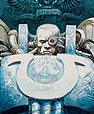

Forums galactiques > Assemblée Galactique : diplomatie officielle > Fregger
karctak 06/06 ETU 21:16 | Hm hm encor une bataille rangé a se que je voi je suis pascifiste a fon mais se genre de petite provocation m'amuse :) |
Agarash 06/06 ETU 21:18 | je tenais a m'escuser , je me suis emporter , et je pense que mon comportement a pu en choquer certain surtout celle des chien ! je m'escuse pour ces bete sauvage (que je n'est par ailleur jamais vu !) pour les avoir comparer avec obiwan |
sayyadina corp 06/06 ETU 21:21 | Obi-machin, tu ne mérites même pas de porter ton nom puisque jadis, lorsque les jédis excistaient,c'était le nom d'un homme qui à chaque instant de sa vie n'a eu de cesse de lutter contre le côté obscure....alors que vous, vous, lâche que vous êtes, vous vous cachez derrière votre faiblesse apparente.......... ( cette phrase qui était jadis légendaire sur la terre vient tout à fait à propos : "Tu ne m'évoques que le dégôut et l'impuissance !! gertes de la cafards !!!!" ). Sayyadina qui espère qu'une chose, trouver le système ou se trouve son tré bon ami Obi-machin...... |
ZapS 06/06 ETU 21:34 | Hola Obiwan, comme vous y allez... si c'est le "sous-commandant" qui vous gène, je ne fais qu'interpréter vos propos je cite "j'attend d'être un commandant digne de ce nom..." qui plus est, essayeriez vous de m'intimider ? je n'ai pas peur d'un lâche qui préfere subir des bombardements HA sans réagir plutôt que de s'élever contre l'injsutice de la mesure... je ne retirerai pas les "insultes" proféré à votre encontre si c'est ce que vous vouliez, j'ajouterai même que je vous méprise... cependant, je ne tenterai pas de vous nuire, du moins tant que je n'aurai rien d'autre à vous reprocher que vos incessantes jérémiades, qui, même si elles me fatiguent, ne justifieraient pas de vous considérer comme un ennemi... j'ai d'autres chats à fouetter... Cependant, je viendrai reprendre toute planete que vous tenteriez de me voler... je ne vous salue pas, ça serait vous accorder trop d'importance... mais bonne soirée tout de même, contemplez bien la galaxie s'étriper de votre petite cachette et préparez vos vaisseaux pour vous jeter sur les miettes... vautour... |
AlphonseHubert 06/06 ETU 22:38 | Là où Obiwan a raison, c'est qu'il est intéressant de voir les belliqueux d'hier appeler subitement à l'union sacrée en vue de la Paix... Votre attitude, tout comme la sienne, relève du pur opportunisme. |
ZapS06/06 ETU 22:59 | qui traites-tu de "belliqueux d'hier" ? je n'ai jamais proné la guerre avant les évenements de ces derniers jours... et aujourd'hui encore je veux la paix.. mais la apix est elle possible quand on se fait bombarder régulièrement à coup de bombes HA ? (certains diront que je me répete, grand bien leur fasse..). tu dis toi même que tu considère Fregger et Arkk comme tes ennemis, il en est de même pour Federalis, seulement nous ne leur parlons pas de la même façon... cela doit il nous séparer ? |
Obiwan Kénobi 06/06 ETU 23:27 | Je crois que les jours qui viennent s'annoncent décisifs pour connaître la véritable personne qui se cache derrière leur pupitre. Personnellement, je m'en tiendrai à ma position déclarée: je ne ferai la guerre qu'à ceux qui la méritent et dans la mesure de mes moyens. |
ZapS06/06 ETU 23:36 | quant à moi je le répete, je ne ferai pas la guerre à d'autres joueurs que Arkk, qui semble vouloir éradiquer une fédération, qui, bien qu'elle n'ait pas été exempte de défauts dans le passé, a su faire le ménage en son sein, et Fregger, qui semble prendre un malin plaisir à voir les innocents mourir sous ses bombes HA... au passage Obiwan qu'entends tu par "faire la guerre à ceux qui le méritent ?" sur quels critères te bases-tu pour évaluer qui mérite d'etre attaqué ou non ? (attention ceci n'est nullement une attaque, je ne fait que poser la question. ;-) ) |
| Doc  06/06 ETU 23:52 | Tout le monde a raison ici, vous êtes bien lache obiwan et vous déshonorez le nom que vous portez. J'espère ne jamais trouvé votre système car je jure que je ne vous laisserais pas de répis avant votre annihilation totale. Même si je ne serais peut-être jamais aussi fort que le Commandant Fregger, je n'ai aucunement peur de me battre contre ce tyran parce que je sais que ma cause est juste et que de ce fait je vancrais. Ce réfugier derrière sa faiblesse est vraiment lache mais cela prouve que vous avez trouvé votre parti, celui de Fregger dont vous espérez une forte récompense en cas de victoire de celui-ci. Sachez que si je vous vois, la seule solution qu'il vous restera sera de fuire vite |
Doc06/06 ETU 23:55 | De plus Zaps, tes derniers propos semblent montrer une certaine crainte vis-à-vis de Obiwan, ils ont bien changé depuis le début et j'ai peur que ça soit par crainte de vengeance. Ceci me déçoit grandement car je fondais en toi de grands espoirs en tant que futur chef de coalition ou du moins de meneur. J'espère me tromper fortement |
obi one kenobi 07/06 ETU 00:00 | la coalition du pact des ancien veu dire qu'elle s'inkiete de la monter en puissance de fregger, nous comptons sur vous pour nous tenir informé de ces agissement sous les plus bref delai que la force avec vous tous |
Reith07/06 ETU 00:04 | Que de paroles ... on remarque qu'un commandant as su bien gerer son empire et qu'il n'a trouve pour seul distraction de pulveriser , d'hanniler les autres peuples/commandants, SOIT . Mais dites moi a quoi sert de crier l'injustice si l'on n'agit pas ?? Au lieu de crier , rassemblez vous , complotez, mais de maniere discrete si vous voulez faire tombez l'ennemi .. J'hallucine quand je vois vos méthodes, on dirait que vous etes encore en 1ere année de l'ecole de guerre de D'AstraK .. A Fregger , je comprends parfaitement ce plaisir "tyrannique" , donc je vous souhaite bonne chance Cette guerre n'est pas la mienne .. |
ZapS07/06 ETU 00:06 | comment cela Doc ? je n'ai pas peur d'obiwan... et je n'ai que faire d'être de ceux qui "mériteraient d'être attaqués par lui", il peut venir je l'attends de pied ferme... je lui ait déja dit tout mon mépris... Je ne l'ai cependant jamais menacé d'attaque, même si je condamne sa position de pleutre et de vautour qui attend sa récompense... Le menacer d'attaque reviendrait à renier ce pourquoi je me bat : j'ai décidé de combattre fregger car il détruit pour le plaisir... quelle crédibilité aurai-je si moi-même j'attaque un commandant seulement parce qu'il a décidé de ne pas prendre part au conflit ? s'il me cherche, je suis à sa disposition, s'il veut prendre sa première rouste, qu'il vienne, ma flotte peut le recevoir... j'aides choses plus importantes que lui à faire pour le moment... mais qu'il se le tienne pour dit : je n'oublie pas les menaces qu'il a proféré à mon encontre... et au moindre écart de sa part, je serait prêt à lui aire regretter... |
Mithrandir 07/06 ETU 10:59 | je pense que zaps a raison.on ne peut obliger tout le monde a notre rébellion.c'est son droit de refuser de nous appuyer.mais néanmoins je trouve moi aussi qu'il a un comportement de lache en se rangent derrière fregger pour ne pas etre détruit.et cette rébélion court certainement a la ruine de certain commendent pendant les batailles mais je pense que ces sacrifices seront bénéfiquent a une futur paix possible si tous s'allient |
Mithrandir07/06 ETU 11:01 | de plus je pense qu'il serait bénéfique de casser toutes les alliances pour en creer une seule très puissante qui prendrait soit doc soit zaps soit justicar pour chef ou dirigeant |
forest 07/06 ETU 11:48 | Seule l'Alliance Eternelle peut s'y opposer. Rejoignez nous ! Lord Forest |
Obiwan Kénobi07/06 ETU 15:19 | Je considère que ceux qui méritent d'être attaqués sont ceux qui mettent en danger mon existence. Je crois que c'est une définition assez faible, non? Et arrêtez de crier votre haine de Fregger ça en devient ridicule. En attendant, vous continuez à agir comme avant et nombreux sont ceux qui rejoignent Fregger non par crainte mais par rejet de vos méthodes. |
obi one kenobi07/06 ETU 15:29 | vous n'avez pas compri mon point de vu je cherche pas a provoké la guerre mais seulemet a me tnir informé je c que fregger tue pour le plaisir il fau le stopper mais je ne propose pas de solution ni ne critike koi ke c soi ke la force soit avec vous |
Arkk 07/06 ETU 15:52 | Fregger! Fregger! A-t-il attaqué la moitié de ses détracteurs? Jusqu'à présent il n'a attaqué que les joueurs les plus puissants. Que les plus faibles d'entre vous réflechissent à ce qu'ils ont à gagner à l'affronter... Il ne vous attaquera pas le premier! |
CLEMENT 07/06 ETU 16:00 | comme Mithrandir je pense qu'il faudrait faire une et unique alliance pour ne pas comme freegerqu'un tiran prènnent le pouvoir dispersés nous sommes moins fort qu'en groupe |
Forums galactiques > Assemblée Galactique : diplomatie officielle > Fregger